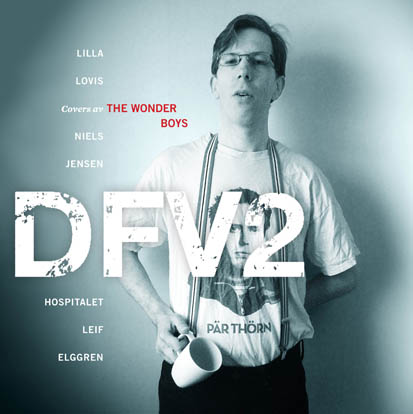
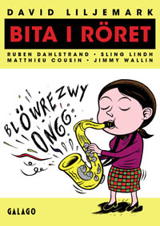
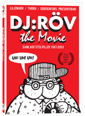
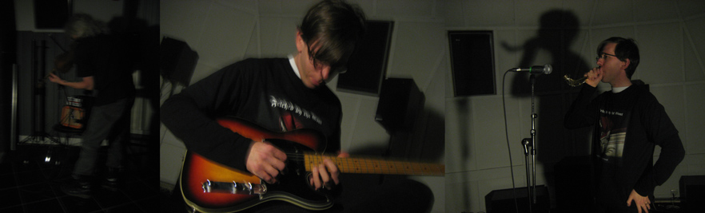
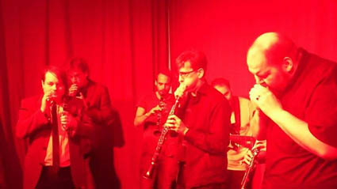
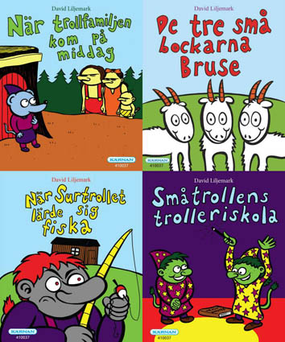

The Wonder Boys
news
June 25, 2015
Finally, the
delayed 7'' vinyl single "DFV2" (Gylf #4) is here, released by Lystring! This follow-up to Den Flygande Värmlänningen (Gylf #3, 2008) contains four cover tracks (and also includes an extra sheet, a flyer for "Een Hommage"), a limited edition of only 110 copies. Get it while you can! It's just as bizarre as the first one, or even more so. Good-ol' Simon Gärdenfors makes a guest appearance on the second track, a favour in return for the TWB/DFV sample on Far & Son's track "Precis som jag" (1:36, 3:09, 3:35; see also News entry July 1, 2013 below).

The wait was just ridiculous. The wav files were sent to the pressing plant June 10 2014, the artwork six days later. Then it took the pressing plant about half a year just to get back and say that they thought the running times were too long (it was no problem time-wise if you compare with the first TWB EP from 2001, but that wasn't made by them). Feel free to compare the times with the printed labels: 0:34, >6:37, 5:20 & 1:40. Some editing later, the song lengths were trimmed down to 0:30 [the very first version was 2:45 actually, but that was never sent], >6:28, 5:09 & 1:40. Then later came instructions about the length of the run-out groove on side A and letting it run for a minute (the loop starts at 6:27:04). After even more wait, test pressings arrived (May 8) were they squeezed in it all (!), even with the added looped minute! For what reason, we don't know - stress, maybe? Second track got up to >7:29 because of that, and they complained about too long running time?! Well, since we were glad to get a record from them at all, that stayed in and the records arrived May 19. But not the sleeves! They arrived early June instead; on the 11th the whole thing was finally made official and available to the public. So, we pretty much all in all waited A YEAR for this release. It was worth the wait, but I'm not very tempted to ever dealing with that pressing plant again!
Still, thanks to our pal Fredrik Jonsson for releasing the EP! Also, this marks the 25 year jubilee of our fanzine Gylf (check News entry Feb 8, 2008 below for pics of the rare 1990 & 2001 releases). Now, dig a couple of classic vintage tracks from 1997 featuring David & Fredrik: "Copyright" and "Do Not Talk About Elvis (Scotty Moore Is Still Alive)"!
And keep listening, lo-fi garage alt. rock afficionados!
Finally, long overdue in digital form (instead of cdr remasters):
*The Wonder Boys’ first cassette album from 1999! All 19 tracks + 1 bonus track!
*
The Wonder Boys’ second cassette album, “II”, from 2000! All 19 tracks + 1 bonus track (the one from the vinyl 7’’ EP 2001)!
(digital transfering by Richard Carlsson, thank you!)
Add to that:
*
a playlist with the most recent full-length album by The Wonder Boys, ”Back In Business” (2012)!
On May 6, 2015, David's new book arrived: "Bita i röret" ("Biting the reed"), published by Galago. It contains four 20-page comics written by David, drawn by Ruben Dahlstrand, Sling Lindh, Matthieu Cousin and Jimmy Wallin, respectively. This is, of course, an absolute must-have (well, you should have everything!). The first story, "Pornographic Saxophones", was printed in english in From The Shadow Of The Northern Lights vol. 2 (2010), and in french in Rayon Frais (2012). In case you can't read swedish but want a taste of it ...

The day after, May 7 2015, the dvd "DJ:Röv - the Movie" arrived, published by Njutafilms. Basic facts about the now 18 year old comic character DJ:Röv ("DJ:Arse") by David, Calle Thörn & Simon Gärdenfors here, and a trailer here. Old sins ("rectal pills") from 1997-2003 collected in a 121 min movie with minimalistic animation, and some new ones too. The 9 min shortie "DJ:Rövs begravning" ("The funeral of DJ:Arse") is included as an extra. (No english subtitles though.) Both movies were premiered at an event May 7 at the lovely shop/subcultural mecca Larry's Corner in Stockholm. "DJ:Rövs begravning" was also shown at Klarabiografen in Kulturhuset on May 9, and on Kafé Klaver on June 11, both also in Stockholm.

The 20 year jubilee of Sugar Daddy (see previous News entry below) was celebrated with a new studio (!) recording, first one since 1994: the track "6:66", recorded in darkness at Elektronmusikstudion EMS, Stockholm 21 Dec. 2014 by David and Jayne Insane.

Felched By The Goat have been active with a number of new songs too: "John 6:66" (yes, indeed very similar to the track above!), "Cherubs", "Goat Prophet", "Rape The Carcass (again)" and "Blind Date". FBTG also got a new amusing review in the "Osignat" column of Close-Up #170, Feb 2015 ("Uppsala", WTF?! Among other errors...).
Well, then there was the release party event for the "Bita i röret" book (and "DFV2" 7''!) on May 11, 2015 at Kafé Klaver, Stockholm.
You got a self-proclaimed "sloppy" Sugar Daddy exhibition of A4 xeroxes of old press cuttings and program sheets etc. First, David read one of his "wermlandian" novels about a thigh-blowing saxophone player. Then the "DJ:Rövs begravning" short movie was shown, before Simon Gärdenfors delievered his swell and hilarious stand-up comedy goods. After that, Sugar Daddy played their first live gig since almost 7 years (!), thus celebrating 20 years also as a live act. The players this time were chief Sugar Daddy David Liljemark on clarinet, Fredrik Jonsson on clarinet (he also played on the first S.D. gig in 1995, and many more afterwards - check the index; Fredrik was the one who introduced David to key inspiration Borbetomagus' Snuff Jazz in 1994), longtime Wonder Boy Christian Kastén on clarinet (this was not only the first time Christian played the clarinet, it was also the very first time the classic early TWB duo David and Christian played music live together!! Yes it's crazy), Tomas Antila on sax (also played the previous time in 2008), David Enemar on sax (previously played another - more tonal - freeform gig when the "Jakten på Bernhard" documentary was shown at Doc Lounge in Stockholm, see News entry Nov 26, 2010 below), Ola Forssblad on sax (Ola helped out with designing the first Sugar Daddy demo cassette!), Erik Hansson on guitar (of The Great Learning Orchestra fame, and his own group Dylikt) and good-ol' Mats Jonsson as conductor (Galago editor, Fredrik's cousin and a legend in his own right).
The Sugar Daddy live performance of "6:66" can be heard here and seen here (with an extra noisy bonus recording snippet here!).

Finally, after Sugar Daddy, Felched By The Goat made their live debut (!) with a performance of "Rape The Carcass" in another new arrangement, which can be heard here and seen here.
A Facebook photo album with pics from the entire evening can be seen here.
The day after, June 12 2015, the "Jakten på Bernhard" documentary (2010; dvd 2011) was shown at the occupied (by Högdalens Vänner) "Folkets hus" in Högdalen, Stockholm, with a Q&A session with David afterwards (camera man Christian K also attended).
In August 2015, David will release four small "Trollsagor" books (miniböcker) for children through Egmont Kärnan: "När trollfamiljen kom på middag", "De tre små bockarna Bruse", "När Surtrollet lärde sig fiska" & "Småtrollens trolleriskola". They will be marketed in a cool yellow DL-designed box.

Stay tuned for upcoming activities ...
Dec 14, 2014
About time for an update, now what's been going on lately...
Well, as everyone can see in the Let There Be Feedback When I Die book (page 221), the 7'' vinyl single "DFV2" (Gylf #4) - the follow-up to Den Flygande Värmlänningen (Gylf #3, 2008) - with four cover tracks, was supposed to be released in July, but even after half a year (!) of waiting, the pressing plant still hasn't delivered the goods, alas [labels are printed but there were difficulties with the pressing, they said]. "Hold on", as Jamie Walters would've said!
Cd remasters of the first two TWB cassettes are also still delayed...
Otherwise, plenty of activity:
Galago published "Susanna & Bo - deluxe", DL's 1999/2002 graphic novel is now back in bigsize print, and with added extra material to go:

David was selected as "Årets värmlandsförfattare" ("Wermland author of the year") by Region Värmland; read the press release here (in swedish).
Three of David's new short stories - a triptych of sorts - written in the Värmland dialect are printed in the last issue of Const Literary (P)review, #3-4/2014, also brilliantly translated to a very special kind of english ("Wermlandish"?) by Nichola Smalley: "Th' Benches", "Th' Book" & "Th' Eruditions". Recommended!
Dayw books have released two more books: Emil Thorelius' ""Boltzianismen"" and David Liljemark's "Tillbaka på Ilandaskolan".

The 28 min movie "Tillbaka på Ilandaskolan" was shown 5-6 July at the event "Party Paradise - the origin" at Åbytorp by Walter-Berggren, Svartå; 29 Aug at Kulturhusfestivalen in Umeå; 31 Oct - 1 Nov at Karlstad CCC during Värmländska bokmässan (as a movie room installation including the bullied doll, three school catalogues 1986-1989, vintage self portrait, a schedule, etc); and 7 Nov during Chimo's vänkväll at Biograf Tellus, Stockholm.
You can now watch it (low-res., no subtitles) here at Vimeo.

The Great Learning Orchestra had an "A4 room" part of the exhibition "No sound is innocent" at Marabouparken, Sundbyberg, Stockholm 30 Aug - 30 Nov 2014 (including three of David's A4 scores). TGLO also played a number of A4 concerts there, David took part in some of them (playing sax, clarinet, zither, toy xylophone, percussion etc etc): 29 Aug, 1 Oct, 22 Oct and 26 Nov (see a couple of videos from 1 Oct here and here, and a couple – two pieces written and conducted by the legendary J.G. ”Foetus” Thirlwell (pictured above) – 22 Oct here and here, and some more from 26 Nov here, here, here and here).
Felched By The Goat have released their new (second) full length album, "Black Beastiality Metal" (11 tracks). The highly talented artist and black metal connoisseur Kim Holm described it with these words: "It's ear-splitting, ugly, and simplistic. It's foul, childish, and obscene. It's silly, it's fucked in all the right ways, and it's very existence is a sneaky finger up Gods ass. If you hate your life, your world, and your ears, check them out. I fucking love it, heartily, fully, and erotically."
(Well, that rave review sure beats Jonathan Göthlin's hilarious effort of a panning in the "Osignat" column of Close-Up #156, Nov 2013!)
The FBTG discography now consists of the following releases (all tracks are up on Youtube; there's also a 2013 outtake and an acoustic demo version of "Altar Of Dead Meat" floating around):
”Felched By The Goat”, s/t album, cdr, 10 tracks, March 2012
“Bend Over For The Beast”, EP, cdr, 5 tracks, April 2012
“Fader Fannen”, single, cdr, 2 tracks, April 2012
”Cömplete Wörks [2012]”, compilation album, cdr, the above 17 tracks + 3 new bonus tracks, April 2012
”Hircus/Futui”, single, cdr, 2 tracks, April 2013
”Black Beastiality Metal”, album, cdr, 11 tracks, Oct 2014
And don't you miss the "Morbid Tales! A tribute to Celtic Frost" book anthology, which can be ordered here from Corpse Flower Records. David contributes with a drawing + an idea for a drawing which Lars Krantz brilliantly did. UgH!!!
While we're on the subject of comics: here you can listen to an episode of Flu Hartberg's podcast Seriemord from Oslo Comics Expo 13 June 2014, in which Peter Bagge and David make up a comic story in front of a live audience.

Dec 14 marks the 20 year anniversary for David's old noise jazz band Sugar Daddy, who made their first recordings that day in 1994 (David's 21th birthday). Some more vintage recordings from the archive is now up on Youtube: 7-14-7 (Malmö 1995), nine-2-five (Lund 1995), 6-6-6 (demo 1994), Christine 16 (Stockholm 1998), nine-2-five (Malmö 1996), Christine 16 (Lund 1996), 18 (Visby 2002), 3-1-3 (Stockholm 2004), 16 (Arvika 2005).
We have also put together a Sugar Daddy page here with a list of all the releases, gigs and participants. Come to daddy!
June 26, 2014
New book out now, published by Dayw books!

Let There Be Feedback When I Die collects David Liljemark's lyrics 1997-2012 for his band The Wonder Boys. In 1999, The Wonder Boys released their first album and set off for a ''wonderful, new start'' - although very much out of the limelight, despite being hailed as a work of genius in the underground press. Named after The Kinks' song Wonderboy, a favourite of John Lennon's, The Wonder Boys have since amassed a large body of work in a variety of styles and subject matter. Songs like New Start, But When I'm Drunk I Want You Back, Alströmer Disco, A Gift I Never Had, The Night When The Losers Won, You Bring Out My Good Sides, Remarried Divorcees, Ad Hoc Lovers, Satan's Death Waltz - you'll find the lyrics to them all in this book.
David Liljemark was born 1973 in Karlstad, Sweden. He is an acclaimed comics artist (Susanna & Bo, Boltzius, Ritman Katz & Mannen med Påskö-ansiktet), author (Orkestern, Dä ha satt säj på hôvve) and filmmaker (Jakten på Bernhard/Traces of Bernhard, Horst - munspelskungen, Tillbaka på Ilandaskolan), and also the main driving force and lyricist for the underground rock band The Wonder Boys. He has also played with the bands Slöphead, Sugar Daddy and Endless Smile, and lives in Stockholm since 1999.
Place your orders HERE.
If you're living in a country that's missing from Bokus' delivery list, contact us directly for orders and we'll sort something out through PayPal!
May 26, 2014
Well, what's new since last time?
Magnitizdat, a new "experimental" 59:36 long one-track cd single, was released earlier this month (May 6).

You can also hear it here.
Two more new/old "one picture" videos:
I Went By Your House The Other Day (1997)
Alströmer Disco (2004)
Here is a photo of the "Easter Chicken" that inspired the lyrics for the first co-written CK/DL song in spring 1998:

In August, it's 15 years since the first TWB release! We hope to be back soon with at least two new releases to mark this anniversary ...
Related bands & other stuff:
The entire sessions by David's childhood heavy metal band Slöphead 1984-1985 are now up on Youtube.
In the magazine Det Grymma Svärdet #18 (Lystring, May 2014) there are six relentless, well-packed pages of metal titles by Mattias Bärjed & David Liljemark Feb-March 2006. The Manowaresque title of this flesh-poundin' contribution is "Let each song title/band name we now write down be a black arrow of death sent straight to the hearts of all those who play false metal." All together now: AAAAAARRGHH!!!
Felched By The Goat have released three new songs, apart from making the short but effective soundtrack to David's 28 min short film "Tillbaka på Ilandaskolan" ("Back at Ilanda school") from January this year. [Update: and here's another new FBTG song.]
Earlier this year, David's new book "Boltzius Vol. 2 - Kompletteringar till boken" (Galago) was published (actually, it was possible to order already in Dec 2013). A sequel to the grand Boltzius book from July 2009, consisting of additional extensive research.

In July 2013, CK & DL's "Knisen & Knåkan går och badar" ("The Cnow & The Pignet go swimming") was printed in its fourth edition (Bonnier Carlsen).
You should also check out this old interview with Christian Gustafsson, about one of his many early bands, Victorian Tin, which has a dedicated cult following that keeps on growing. You also get a nice run-down of other CG groups (including the infamous Baren...). The interview seems to have been made in 2006 or later, and it's curious that Christian viewed himself as not a "real" TWB member! Oh Gröt, you're very real...

[Christian G, 1992]
As one of the many on/off members of The Great Learning Orchestra, David had the undescribable pleasure of attending two meetings/workshops TGLO had with the legendary, one-and-only J. G. Thirlwell (aka Foetus and a number of other monikers/projects) on May 17 & 20, 2014. Check out some photos JGT posted on his Tumblr from Saturday and Tuesday. To say that JGT was a HUGE favorite of David's during the 1990s is an understatement; we're talking major hero worship at the altar of Foetus! Very exciting plans are made, read all about it here!

In 1998/1999, Sam Sohlberg & DL even discussed making a V/A tribute album to Foetus, to be called "LOVE" (this was before JGT used the title himself for his 2005 Foetus album), but nothing came out of it due to lack of money - except a 8:15 DL reworking of the Foetus classic "Fin" in the TWB vaults ("David Liljemark feat. the Sugar Daddy orchestra (Fanboys over Frisco)", layered noise jazz that at the end faded into an old school sloppy acoustic blues with vocals), recorded Jan 10, 1999.
July 1, 2013
It's time for a new cd: "The B.O.N.U.S. Manifesto", which is a "Die Kleine Schlagerparade" type of release (if some of you thought "Back In Business" was much too coherent and homogenous), with 28 tracks and a playing time total of 79:05 min! Track list and details in the Discography and Lyrics sections as usual.

The track selection was actually decided already in mid-March last year and the cd sleeve almost done by then too, but we thought "Back In Business" should go out first, the "proper" comeback album, after such a long hiatus.
More news since last time:
New videos:

A Gift I Never Had (possibly the best TWB track ever?)

Crucifiction in E minor
Also, here is a fan video of Conspiracy Theory off of the "Back In Business" album.
Speaking of the "BiB" album, here's a one-picture video of an earlier “radio edit”-version of Back In Therapy, at the request of mr Patrik "Schtrandth" Strand, of Baren med vin & Josefin fame (bass player #2).
Don't miss out on all around good-guy and TSOOL überfan Steve "Retro Man" Worrall’s "Retrosonic" podcast; TWB fans should pay extra attention to this episode, from 56:30 onwards...
On Swedish Radio's show "Musikguiden i P3" guest starring our dear friends Far & Son, a snippet of the ”Vill du dubba?” cover was played on Feb 26, 2013 (at about 45 min into the show), including very nice shout-outs for TWB. Simon & Frej also mentioned that they sampled a quote from that song for their hit ”Precis som jag”. We're very honoured, of course!
Gamle härlige Simon G even devoted a whole episode (#42, April 27, 2013) of his podcast
"Arkiv Samtal" to let David talk about his so-called "music career". (An earlier interview was in #27, Jan 12, 2013)
The soundtrack to "Jakten på Bernhard" ("Traces of Bernhard") and "Post Scriptum till Jakten på Bernhard" plus plenty of assorted outtakes is finally collected on a 33-track, 79:07 min cd, featuring David (guitar, sax, clarinet, scratching), Mattias Bärjed (guitar, clarinet) and Jan Vogel (harmonica):

Since even more old Bernhard Redenstedt (1924-2008) notes from 1997 has been kindly sent to David, a new short video, "Jakten på Bernhard (filmmusik II)" [MB/DL], has been put together with the ten notes (fronts & backs) for all to see, set to the "night" theme from the movie (here shortened).
After the 20-track "Cömplete Wörks [2012]" cd last year, Felched By The Goat made a come-back with the 2-track "Hircus/Futui" cd single and an outtake.
More archive stuff on YouTube:
Mattias Ullman's ambient noise band Endless Smile: I Have Red Books (ca late-90s studio recording), Point Of No Shadow (recorded live at Smålands Nation, Lund, March 4, 1999), and track 1 and track 2 from the most recent (hopefully not last ever??) concert by Endless Smile at Lilla Teatern in Lund, Dec 3, 2005. (David played sax/clarinet/bamboo flute on these four tracks.) Endless Smile was also discussed in this podcast from Feb 2013.
When was the start of The Wonder Boys? When David started making "solo demos" on his Tascam cassette porta studio in 1997? Or earlier (when, say, C#-D-H-G/El Disgusto/Sax Play was composed), or later? One possible contender is when Christian Kastén came over to David's place (both were living in Lund at the time) and recorded the electric guitar track for "Easter Chicken": March 30, 1998.
That marks a 15 year jubilee which we hope to celebrate in a delayed way later this year ...
(Oh, the mp3 server has been down for quite some time now, sorry about that, hope it can be fixed in the near future...)
Oct 1, 2012
Finally... finally...!!! After a more than six year long wait, at last it is here:
"Back In Business", the new full-length album by The Wonder Boys!

"Back In Business" features 10 new tracks (a total playing time of approx. 58 min) and is the long-anticipated follow-up to "Passion & Compassion" which was released in April 2006.
More details in the Discography section, and lyrics in the (you guessed it) Lyrics section.
Here is a preview of the CG/DL track "Conspiracy Theory". Enjoy!
Sept 18, 2012
About time for a new update.... What's been going on since last time?
Well, another new video:

I Have A Dream (ABBA cover) (music recorded 2004)
You should also check out the "Black Beastiality Metal" by Felched By The Goat (one full length album, one EP, one single and three bonus tracks; the "Cömplete Wörks" [2012] consists of 20 tracks).
Before going on parental leave #2, at the end of April David released a new book, "Dä ha satt säj på hôvve" (Heidruns förlag), a collection of short stories written in värmländska.

More archive stuff has gone up on YouTube:
Sugar Daddy: 6-kärlek-6 (live at Smålands Nation, Lund, May 14, 1997)
Sugar Daddy: 8 1/2 [dedicated to Fellini] (live at ak28 gallery, Stockholm July 4, 2008)
For a short while there was also a video up with a one minute snippet of David playing noise sax to a Sugar Daddy cd in his old Lund apartment in 1997, but the clip was unfortunately taken down... But hey, you can catch this one instead, "Split" (1993), featuring our favourite american, mr Tim Ellison of Modern Rock Magazine, The Nephews and the Bonniwell Music Machine fame!
Re-runs of the "Jakten på Bernhard" ("Traces of Bernhard") documentary (from 2010, avaliable on dvd here) has been shown on swedish tv (SVT) this summer: on SVT1 Monday July 9 13:40 and late Sunday July 15 00:25 [=July 16], and it was up for internet
viewing on SVT Play a month, until Aug 8.
It was also shown in Finland on YLE FST5 July 9 14:40 and July 14 23:30, and on SVT World July 9 13:40 and July 14 22:30. We're very happy to report that the four mistakes in the swedish subtitles on the dvd (mentioned in the "Orkestern" afterword, page 232-233) was NOT repeated this time!
Before that, the "Bernhard theme" music was also played during a SVT news flash in Västnytt April 26, 2012 (a conflict about apartment houses in Bäckefors).
There's also a new short li'l music video with parts of the soundtrack, featuring recently discovered old Bernhard Redenstedt (1924-2008) notes, which came to David's attention after the short "extra material" sequel "Post Scriptum till Jakten på Bernhard" was released on the dvd last year:

Jakten på Bernhard (soundtrack) [=three of the themes, recorded 2009]
Stay tuned for more TWB news soon...
March 7, 2012:
A new update sure is long overdue, we know. Well, please bear in mind that ever since 2006, The Wonder Boys have been busy with the next full-length cd, "Back In Business", which hopefully shall be released later this year after an unusually long wait. After that, a bonus cd (similar to "Die Kleine Schlagerparade") will be next in line: "The B.O.N.U.S. Manifesto". Also, a cd with the soundtrack to DL:s "Jakten på Bernhard" ("Traces of Bernhard") documentary and related outtakes is planned aswell (....and some time, hopefully, cd remasters of the first two TWB cassette albums, which is VERY long overdue).
Apart from all those grand plans, what's new since last time?
The video comeback continued last year with four more videos:

Flaskpost

Wa-Oh (Turn 'Round My Head)

Sax Play

Café CM
Speaking of videos, you should also check out these related things:

Mikal (1991; animated shortie by DL (+ bonus). The score to the signature melody was written down April 1 & Dec 15, 1990, and a new recording was made March 14, 2011. When a vintage recording of the "Mikal" signature eventually turns up – surely, there's got to be a cassette with it somewhere – we'll keep you posted)
Sugar Daddy: nine-2-five (2002; live recording from Lund Konsthall Oct 21, 1995. This was briefly considered for inclusion among the "Jakten på Bernhard" dvd's extra material, but gave way for newer stuff instead, i.e. "Post Scriptum", "Frödings hjärna" and the 5-track TWB audio loop)
Slug Area: live at Antikvariat Hundörat, Stockholm, Sept 9, 2011. (Leif Elggren: tin cans. Jonas Ellerström: guitar. DL: clarinet. (Please note DL:s Bernhard Redenstedt t-shirt!))
Slug Area: pre-gig rehearsal at Antikvariat Hundörat, Stockholm, Sept 9, 2011.
Martin Lexelius (formerly Fredrikson) has uploaded a nice bunch of Slöphead II tracks/videos: Burning Electric, Chopper Attack, Where Is The Pen?, Winged Assassin, Evil Eagle, Woman Murder, Slöphead.
The documentary "Jakten på Bernhard"/"Traces of Bernhard"/"Bernhardin jäljillä" was shown in Finland on swedish YLE FST5 on May 16, 2011, and was up for internet view (for people in Finland) a month afterwards at Arenan, until June 15.
At the end of July 2011, CK's & DL's third "Knisen & Knåkan" pixi book was published, "Knisen & Knåkan lär sig dansa" ("The Cnow and The Pignet learn how to dance").

Furthermore, the first two K&K books will be reprinted during 2012: "Knisen & Knåkan har tårtkalas" (third ed.) in Pixibox Kalas ("Pixibox Party"; in March), and "Knisen & Knåkan går och badar" (third ed.) in Pixibox Semester ("Pixibox Vacation"; in June).

January 2012 saw the release of David's "lost" experimental novel "Orkestern" ("The Orchestra"), which was written back in 1996-97 (as a part of the "Susanna & Bo" story, a link between the "Susanna & Bo" hardcover book from 1999 and the "David Liljemark" (a.k.a. "the silver album") hardcover book in 2000), now finally published with the partly missing illustrations to each chapter, and an extensive new afterword discussing DL's work in comics, music, movies and writing. There's also a special limited "artist book" edition (20 copies), boxed and signed, including two paintings each from the "Café CM" TWB video.
Jan 15, 2011
The Wonder Boys' extensive video comeback (see previous entry) is continued, with three additional new videos up for view!

Lament 22

She Was Not The One

Live May 22, 2009: No Camera + Be My Lord (Em)
P.S. Please also note that Det Grymma Svärdet #5 (magazine + 10'', aug 2010) includes "Tävvelsten" (from 1997), in a new edit (original version on the "Dayw" 2-cd from feb 2005).
Nov 26, 2010:
We're terribly sorry for the lack of updates this recent year. It has to do
with extensive film work, a computer change, parental leave, and, well, more
film work, etc. The page has moved, and so did the mp3 server (those links should
work again now).
Anyway, what's new since last time?
Summer 2009 saw two special "private" live performances:
On Lars' and Nicole's wedding, Aug 1, 2009, the Honky Tonk Boys (Björn
Radon on vocals, David on acoustic guitar and some backing vocals, and guest
star Tassilo Radon filling in for Lars, on a wonderful toy trumpet solo) performed
the DL-penned song "Happy Blues". Please note Folklore Center legend
Izzy Young (Bob Dylan's old pal) in the left picture, sitting to the right!

Two days later, David (sax) and his brother Dan (trumpet), played for their
dearly beloved Grandma, who turned 90 that day (her last birthday, as it sadly
turned out earlier this year). The set (once again) included "Ja må
hon leva" and "Värmlandsvisan", and as a "sax only"
encore (which may be of interest to the longtime TWB fan), a surprise impromptu
performance of... "Sax Play"!

"Den Flygande Värmlänningen" 7'' was for sale at S.S.
Records for a while, but when we checked back now, it seems to be sold out
(at their place, that is - it's still available through Lystring, though).
"I Detta Satans Rum" was apparently played Dec 15 2009 at Art
for Spastics.
David's 58 min documentary "Jakten på Bernhard" ("Traces
of Bernhard", Silverosa Film 2010, produced by Anna Byvald & Lukas
Moodysson), was premiered at Gothenburg International Film Festival Jan 29,
2010. TWB fans should note that it also features Christian Kastén behind
(and occasionally in front of) the camera; that the song "Eva's Chair"
(from "The Grand Tradition Of Sitting Between Chairs") is included
in the soundtrack (mainly written and performed by David, with some excellent
help from old pal Mattias Bärjed of Ants of the Underground, Nymphet Noodlers,
The Soundtrack Of Our Lives and Free Fall fame) and also "Madrigal"
(which is the mp3-only released "A Story (1978)") without vocals);
that Bernhard is the man behind the lettering used for the TWB logo first used
inside the cd tray of the "T.A.S.C.A.M. Manifesto" album (later on
the front covers of "The Grand Tradition..." and "Passion &
Compassion").
"Jakten på Bernhard" was later shown on "Doc Lounge"
events in Malmö (Feb 15, Inkonst), Lund (Feb 16, Mejeriet), Stockholm (Feb
23, Allmänna Galleriet) and Gothenburg (March 2, House of Win-Win). The
Stockholm screening also included - apart from the "Efterlysning: Space"
short movie from 2002 - a rare, improvised live performance of "Ett stycke
för Bernhard" ("A piece for Bernhard"), by David (sax),
Jonas Ellerström (electric guitar), David Enemar (sax) and Nicole Vickers
(clarinet) - more members were supposed to attend, but couldn't do so, due to
the terrible weather situation.

Swedish Television (SVT) showed "Jakten på Bernhard" on April
11, also had several re-runs the following week, and it was up for internet
viewing on SVT Play a whole month, until May 11. You can still catch a few minutes
here
(until March 31, 2011), aswell as a trailer
on Youtube. It was also shown at Värmlands Filmfestival, Arvika (April
17) and on the "Pandoras ask" exhibition at Galleri Verkligheten,
Umeå (April 23 - May 7), then later (Sept 25) competed at Nordisk Panorama in Bergen, Norway.
There's also a fan page on Facebook.
(By the way, "Horst - munspelskungen" was shown July 10-11 in a pig
sty (!) at the "Party Paradise no. 2" event in Åbytorp.)

In mid-January 2011 (Jan 12), Folkets Bio will release the dvd
"Jakten på Bernhard och andra filmer av David Liljemark", which
includes the following material:
* Jakten på Bernhard (58:00) [which also has english subtitles]
* Post Scriptum till Jakten på Bernhard (12:08)
* Horst - munspelskungen (30:00) [see Nov 15 & Dec 18, 2006 entries
below]
* Efterlysning: Space (6:02)
* Frödings hjärna (0:47)
* Ett litet barn (24:06) [see March 16, 2005 and May 26, 2009 entries below]
* The Wonder Boys: My Old Friends (4:18) [see Dec 8, 2005 entry below]
* ...and a 5-track TWB audio loop (New Start [DL], The Night When The Losers
Won [CG/DL], Alströmer Disco [DL/CG], Sax Play [DL], A Gift I Never Had
[CG/DL]).
Pretty neat, huh? Do NOT miss out! It's already advertised for pre-sale at Discshop
and Webhallen.
The Wonder Boys have also done a serious comeback in the video department,
this autumn 2010. Apart from the old My
Old Friends video, you can now enjoy these new videos:

This Used To Be Our Bench

The Day Before Christmas

No Wave Disco (for Erik
Ahlgren 1727)

Not Yours

Let's Glitch Again Like
We Did Last Summer

I Thought It Was A Joke

Live Inside The Sagrada
Familia
We hope to be back again soon, folks...
Aug 28, 2009:
PAGE MOVED FROM GEOCITIES TO HERE, i. e. www.thewonderboys.se
!
July 13, 2009:
David has a new book out, the grand Boltzius,
which you can get from Ordfront Galago.
It begins with a 100 page "drama documentary" graphic novel about
David's father's mother's father's brother, the (in)famous and bizarre so-called
"faith healer" Fredrik August Boltzius (1836-1910). The reality which
the comic story is based on, is then explained in detail in 260 additional pages
of extensive documentary notes. Yes, this thesis-like book is one of a kind,
that's for damn sure!

Music bonus: One of F. A. Boltzius' (1836-1910) own songs was "Wandringen",
which David set to (new) music a couple of years ago (a simple D-A-G-A chord
pattern), which you can listen to here.
Enjoy!
May 26, 2009:
Memfis Film have rereleased all their previous
movies and collected them in a huge 23
disc box, including Lukas Moodysson’s
brilliant “Ett hål
i mitt hjärta” (“A
hole in my heart”), a DVD which among the extra material also contains
David Liljemark’s ca 24 min short movie ”Ett litet barn” (”A
little child”) - see news entry 16 March 2005 below. This time, it is unfortunately
wrongly credited to "David Liljeberg" (sic!) on the back sleeve, though.
May 19, 2009:
Vill Du Dubba [=Las Palmas cover] was included in another WFMU playlist
Jan 19.
Our good friends Far & Son ("Father
& Son") included a sample from I Detta Satans Rum [=Brainbombs cover]
in their brilliant song Precis Som Jag ("Just Like Me"): watch a fan
video here.
Also, David has a new book out, Äppelkindat
Bus ("Applecheeked Mischief"), which you can get from Komika.

Dec 18, 2008:
Thanks to Lystring boss and general
inspirational good-guy mr Fredrik Jonsson's sweet distribution of Den
Flygande Värmlänningen (while selling off the new superb Brainbombs
LP), TWB's latest single has been an underground hit of sorts at WFMU, with three
different tracks included on three different playlists; Nov
21 (Vill Du Dubba), Nov
24 (Tom Top) and Nov 25
(I Detta Satans Rum). The DFV single now also has distribution
in Austin, Texas (billed as "Slightly demented Swedish lo-fi pop whimsy").
As for the upcoming holiday season, you know what songs to play on Dec
23 and Dec 31.
Oct 31, 2008:
Just thought we'd surprise everyone with some new mp3 tracks!
"No
Wave Disco (for Erik Ahlgren 1727)" [DL/Erik Ahlgren] is about a man
contemporary with Jonas Alströmer (!ereh
dnuof eb nac sciryl).
For a remix, dig "Ocsid
Evaw On (7271 Nerglha Kire rof)". The basic track was recorded at Studio
Gröt in Forshaga Oct 12 and completed the 25th at Studio Dayw, Bandhagen.
At the same recent Studio Gröt session, "One
For Daddy" was recorded, performed by David and a very special special
guest star: Nora, Gröt's daughter. A stripped "bags
only remix" can be found here.
Another Studio Gröt session from March 24 this year (with David playing guitar),
coupled with a Studio Dayw session April 6 (with David and Anna playing clarinets),
yielded two new tracks: "A
New Statue For A New Park" and "The
Rooster And The Hen (Clarinets In Love)". Enjoy!
Oct 30, 2008:
Now and then, The Wonder Boys (or should we say The Fan Boys?) have the
occasional brush with celebrity; David meeting Yoko
Ono after attending a "part concert, performance & Q/A" type
of event ("An
evening with Yoko Ono") at Kulturhuset, Stockholm May 29, 2004 and
getting his copy of the "Some Time in New York" 2-LP signed (see a
close-up in the Pictures section) + handing over the "Alströmer
Disco EP", is of course a classic.
This time, on a piece of his own artwork (!), David got an autograph ...from
a BEATLE!!!
The thing is: Pete Best, The Beatles'
original drummer (from Aug 12, 1960 to Aug 16, 1962) visited Karlstad
while on tour to promote his current band's new album, "Haymans
Green", and attend a Beatles convent. Because of the occasion (and
bear in mind that The Beatles - the post-Best lineup - once played in Karlstad,
at the Sundsta
aula Oct 25, 1963), the very nice mr Carl Edlom (who has previously played
with Christian G in an unnamed post-"Subtitles" pre-"Attic Drive"
band constellation in the early/mid-1990s), assigned an illustration from David
to be used in NWT, Oct
24. The result, made instantly upon request Oct 20, was this montage (yes, another
paraphrase!):

The utterly good-hearted mr Carl Edlom (well, he's the hero of this
story!) then granted David's request for getting Pete
Best to sign the printed page, bringing the paper to the convention Oct
25 - see Carl's photo below:

"Pete liked it and checked closely", says Carl. On Pete
Best's right side is his younger brother (& co-drummer bandmate) Vincent
"Roag" Best (the son Mona
Best had with the much-younger-than-her Beatles' personal assistant, Neil
Aspinall).

The NWT issue, signed & dedicated by the
original Beatle, Mr Pete Best!
(The doodle on the right - inspired by Hergé
perhaps? - is by Roag, who according to Carl, had some trouble standing in the
shadow of his big brother...)
And while speaking of early members of The Beatles - don't forget to check
out the truly, truly awesome paintings by Stuart
Sutcliffe at the Stuart Sutcliffe
Estate (see "Important works" links - all of them!). That none
of these paintings ever was used for a Beatles album cover, is in retrospect
nothing but a crying shame...
July 25, 2008:
The release of Den Flygande Värmlänningen
was celebrated at the opening of David's art show "Den
lille konstsamlaren" ("The
little art collector", exhibiting the highlights from DL's collection
of weird "outsider" art, bought at various flea markets during the
past 10 years, some works familiar to the longtime TWB fan) at ak28
in Stockholm 4-6 July. Sugar Daddy performed "8 1/2 (for Fellini)"
at the opening too, including some rare saxophone flogging.

Also, the video for "My
Old Friends" (see News entry for 8 dec 2005 below) is now up on YouTube!
May 19, 2008:
On the evening of May 3 at the wedding party for Anna & David, we finally
managed to squeeze in many of the great people who've played and/or sung with
The Wonder Boys over the years, in one grand group picture. Photo: Nicole Vickers.

From left to right: Markus Lantto, Anna Liljemark (formerly Edin), Åsa
Lundgren, Christian Gustavsson, David Liljemark, Christian Kastén, Lars
Pettersson, Maria Boström, Dan Liljemark. A round of applause, and we'll
take a bow!
May 7, 2008:
First review of Den Flygande Värmlänningen
can be found here!
If you can't read portugese, learn it fast.
April 18, 2008:
David guested ZTV on the first episode of "ZTV
Presents: The Simon Gärdenfors Trash-Culture Show" Monday 14:th,
22:00. Our dear friend, good-ol' Simon
G (of Las Palmas fame,
etc) brought David in to talk
about his obsession with (the "Mission: impossible" nature of) completing
his collection of the chewing gum card series "SPACE", that was manufactured
in 1982 by Dandy Chewing Gum in Vejle, Danmark. Out of 100, #38 and #91 are
still as missing as they were in the mid-80s, and have never even been seen
IRL by David (but there's two different versions of #17, though!) -who has ca
670 extras (and even an extra "SPACE" box). If you have one or both
of these cards, #38 and/or #91, get in touch I-M-M-E-D-I-A-T-E-L-Y!!!!, and
you will be kindly rewarded... If you're familiar with David's comics, you might
already know about this obsession, but anyway, you can watch the "candy-wrapper"
episode of "The Simon Gärdenfors-Skräpkultur Show" here.
Anyway, the "SPACE" quest hasn't got much to do with TWB's music -
at a surface glance, anyway! So, instead we'd now like to give away an old lyric
reference maybe few of you noticed back when. In "(Stuck In A) Weird Conversation",
off of the "T.A.S.C.A.M. Manifesto" album
from 2002, there's a line that goes:
"-So I went to a SHoP on Hunt Lane - they always greet you with a SMiLE
:-)"
This, of course, was (and still is) a tribute to Jon Hunt's & John Lane's
great (and now pretty much lost) "SMiLE
Shop" web site, about Brian Wilson's & the Beach Boys' at the time
still unreleased masterpiece "SMiLE".
April 5, 2008:
A belated report to inform everyone that The
Great Learning Orchestra performed "Parsifal (1882-38969364735)"
by Rodney Graham (1990)
17 February 12.00-13.00 at Konstnärshuset
in Stockholm (featuring TWB's David on alto saxophone). Photo by Anna.

Feb 8, 2008:
...And thanks to our good friend mr Fredrik Jonsson and his Lystring
label, The Wonder Boys have now made their comeback in the 7'' vinyl format!
250 copies of this beautiful EP - which comes in a fold-out sleeve - was delivered
the day before yesterday, but will get a proper release date in April/May:

Coincidentally, this also happens to be the by far strangest TWB release ever
(this far). "Den Flygande Värmlänningen"
pays tribute to the swedish music elite with very rearranged covers
of tracks by Las Palmas
("Vill du dubba"), Robert
Broberg ("Tom Top") and Brainbombs
("I detta satans rum", the song that evolved into "No Place"
(lyrics) and "Fuckmeat" (riff)), and also features an interlude called
"Fåglar (Intro)", related to Cornelis
Vreeswijk. The sleeve is (re-)designed
by graphics maestro Petter Sjölund, and includes (to go with the liner
notes) a black & white photo of David taken by his fiancé Anna Edin.
It's also the third installment of Gylf, a fanzine (8 A6 pages each)
by David & Fredrik that came out in 1990 and 2001, respectively (2001 was
also the year when the first TWB vinyl EP was released
- a few copies are still available, and everyone should have it!).

Gylf #1 (1990) and #2 (2001) - both extremely rare (33 numbered copies each).
Jan 17, 2008:
Thanks to a recent wonderful digital resurrection of files on an old defunkt
Macintosh computor, we have finally completed our Lyrics section with all the
songs from the first two TWB "cassette albums" (not just a few selections
as before). Yes, we know, they should indeed be rereleased on cd in their entirety
aswell.)
Feb 5: Some missing old lyrics from "Good Sides"
CD2 also added.
Oct 20, 2007:
The Horst movie (se below) was shown 13:00 Sunday 7th Oct at Röhsska
Muséet in Gothenburg, during this
event; a Koloni collaboration
with the GAS festival.
(Also, see DN 18 Oct for a note by David regarding
the film.)
We've also just heard that David's & Christian K's "pixi" children's
book "Knisen & Knåkan har tårtkalas" (se news entry
below for May 2003), has been released in Japan!

July 7, 2007:
Brand new mp3
up for downloadin'!
"I
Was So Close To Kissing You Then", written & performed by David (with
help from Maestro Gröt; drum programming assistance & some "bass"
guitar corrections), recorded over a period of time at Studio Gröt [started
4 aug 2006!] & Studio Dayw, also featuring - and we're very proud to present
this - a wonderful Uilleann
pipes solo by the bag pipe maestro Jan
"Liraman" Winter. Thanks, Jan!

And while we're at it, since it's been unusually quiet on this page lately (oh
don't you worry, The Wonder Boys are working on the next album), as a bonus, here's
a scruffy off-the-cuff demo called "The
Dead Pay No Entrance", a very recent track performed by David (acoustic
left-handed flea-market guitar, sax, vocals) and Lars (harmonica & electric
guitar).
History lesson: for those of you who missed it, in Tim
Ellison's Rock Mag Review Archive, you can read his second TWB review, his
review
of "II" (TWB's second cassette album) in Modern Rock Magazine #9
(2001).
June 12, 2007:
The Horst movie (se news entries below) will be shown Monday 18th June at
Fylkingen in Stockholm, during this
event - a release party for the new great magazine "Det
grymma svärdet" #1 ("The cruel sword", or poss. "The
awesome sword"). The movie will also be shown Wednesday 20th, 15:15, at
Lava, Kulturhuset,
Stockholm.
May 14, 2007:
Yesterday 13-19 at Fylkingen, Stockholm,
The
Great Learning Orchestra (see June 9 and Jan 29 entries below) had a day
devoted to their "A4 room" project, with A4-concerts, A4-exhibition
& A4-installation. The
GLO at the time consisted of c:a 11-13 players, + some additional participants
from the audience. 13 different "A4" pieces were performed by the
group, some of them in two or more versions. David played saxophone (mainly),
and contributed one of the "A4" pieces performed: an untitled minimalistic
thing that started with a take on the "Rock Around The Clock" sax
solo (constantly riffing in E), which then gradually (d)evolved into free-form
noise. The closing piece of the day was Cornelius Cardew's "Schooltime
Special" (1968).

You can order a 2-cd of the day's recordings from Loco

(or if you wanna get anal about it: get the 4-cd box with the sessions in their
entirety!).
Feb 8, 2007:
The Horst movie (se news entries below) will be shown tomorrow Friday on
"Gata" at Södra Teatern/Kägelbanan,
Stockholm, and on Sunday 11 at Panora, Malmö, on the "Music
Doc Festival".
Dec 31, 2006:
And now it's prime time to listen to this
song...
Dec 23, 2006:
Merry Christmas everybody! And don't forget to listen to this
song today...
Dec 18, 2006:
Extra material! Here are some rare "behind the scenes" shots from
the making of the Horst
movie mentioned below: three photos from David's interview with the harmonica
king [Horst Holtfreter] on 10 January 2006, taken by Micke Carlson
(who can be spotted in the background photographing at least one of these pictures
in the movie, while Horst talks about getting beat up in Finland).

Photos © Micke Carlson, used with kind permission.
Nov 15, 2006:
In case you've wondered what (previously) unsung hero who was the inspiration
for the weird harmonica solo in "Satan's Death Waltz", you'll know it
for sure after seeing David's 30 min short documentary movie "Horst
- munspelskungen" ("Horst - the harmonica king"), which will
be shown (together with Josh Rubin's "Derailroaded" about Wild Man Fischer)
at the Popcorn music film festival (8-10 dec)
in Stockholm, on Sunday 10 dec at Debaser Medis, starting 15:45 in the afternoon.

Oct 15, 2006:
Translation of the "All styles
at once" TWB interview in Sonic is finally up, sorry it took a while...
Aug 29, 2006:
New review!
“Passion & Compassion”
was reviewed in the swedish pop fanzine ettnollett
#49, by Robban Svensson. Read it here.
(including translation...)
June 9, 2006:
"All styles at once":
in Sonic #29, Johan Jacobsson has
written a piece about The Wonder Boys. Read this short interview with David
here (translation coming up soon)!
Also, tonight, The
Great Learning Orchestra (featuring David among the sax players again -
see Jan 29 entry below) will perform the music to Tobe Hooper's "The Texas
Chainsaw Massacre" in Hörsalen at Kulturhuset
in Stockholm, as a part of "The Underscore Symposium - the ultimate seminar
about filmmusic".
April 29, 2006:
News about "related" stuff:
The new 3'' cdr record label Müßiggänger
has a brand new release out by Sugar
Daddy:
"nine-2-five" (live at Lunds Konsthall, 21 Oct 1995 (mid-day show
- in the evening, "6-6-6" was performed)). Limited edition of only
33 numbered copies, hurry up to get one of these beautiful & rare collector's
items! Sugar
Daddy is David's noise jazz band, which was formed in Dec 1994 and has played
live 17 times since then; a total of 32 different people have so far participated
in the ever-changing line-up.

The second printing of David & Christian K's children's "pixi"
book "Knisen & Knåkan har tårtkalas" ("The Cnow
& The Pignet have a cake party") is now out in the stores; see May
2003 entry below (and Nov 28, 2005 entry aswell).
April 10, 2006:
The Wonder Boys' new album is here: "Passion & Compassion"!

Finally, it's time for the real follow-up to "Die
Große Schlagerparade" that came out in January 2005. This new
full-length album, "Passion & Compassion", contains 21 tracks;
another excellent eclectic mix of styles, as you might expect by now from The
Wonder Boys. See the discography section for tracklist & details, and
place your orders ASAP so you don't miss out on this. We wouldn't want that,
but most of all: YOU wouldn't want that. A win-win situation for all –
especially the ears.
Also, both the pictures & mp3 sections are updated.
Note to TWB trainspotters out there: David makes a (very!) short "cameo
appearance" in Lukas Moodysson's
new, awesome film, the beautiful "Container"
(D. wears a Bachman-Turner Overdrive tour t-shirt that he bought at a BTO gig
in Örebro 14 April 1991! Yes, that's what Mattias is wearing on the cover
illustration of this
record, mentioned in the Nov 2003 news spot below). Even more anal-retentive
note: the SS dagger (borrowed from David's dad) has previously been featured
in the "Susanna
& Bo"
comics and has since been shown on a
couple of
exhibitions.
February 28, 2006:
The Wonder Boys now have a MySpace page here: www.myspace.com/thewoenderbeuys
(Why the weird “The Wönder Beuys” url? Well, it turned out
that another “The Wonder
Boys” band – formed in f**king jan 2005! – had already
signed up.)
January 29, 2006:
Dear fans, as you might’ve noticed, we try to keep you up-to-date
with most things that’s going on in The Wonder Boys’ world, be it
big or ever so small. We usually don’t tell everything about other related
projects and stuff though, like: the occasional Sugar
Daddy gig (David's noise jazz band formed in 1994, most recent concert was
performing “16” to the “9-2-5” video at Arvikafestivalen
16 July, 2005); what goes on with Christian K and his pop maestro friends in
Caroline Soul (we reckon
you’ve bookmarked their website and check back often); David’s recent
cartoon book collection (“Ritman
Katz & Mannen med Påskö-ansiktet” – “Ritman
Katz and The Man with the Easter Island face”, Optimal
Press sept 2005) or comics exhibition (“Rekvisita-
serierna och verkligheten” ("Props")
13 jan – 12 feb 2006 at Serieteket,
Kulturhuset, Stockholm –
original art + related objects); or David’s sax playing again with Mattias
Ullman’s shimmering noise-ambient band Endless
Smile (live at Lilla Teatern in Lund 3 dec 2005, after some “silent”
years); or the news about Studio Gröt being in the process of moving (to
Forshaga).
But this, we just have to tell you about right now:

Yesterday, 28 January 2006, in Hörsalen at Kulturhuset
in Stockholm, The
Great Learning Orchestra (formed by Leif Jordansson & Pelle Halvarsson
in 1999), which this time consisted of 31 players (featuring David on alto saxophone),
performed Lou Reed’s influential
1975 masterpiece 2-LP “Metal
Machine Music – The Amine ß Ring” in a complete version
arranged for orchestra by Ulrich Krieger
(of Text Of Light
fame). If you know the Zeitkratzer version
– featuring Lou Reed himself doing a guitar solo – from 2002 (they
played it on two different occations), they were c:a 10 players, and the piece
was shortened; part 3 & 4 were split together making a shorter version,
which actually makes this complete TGLO
live version a “world premiere”. And it was fuckin' AWESOME!
A joy and an honour to play. After the end of the “locked groove”
that finishes the set, first shout from a guy in the audience was “ONE
MORE TIME!”
No prisoners were taken.
January 4, 2006:
Our dear comics artist friend & colleague Mats
Jonsson had the good taste of playing The Wonder Boys in the swedish radio
on December 29th last year – the track of (excellent) choice was none
other than “If
We Get Through This, We’ll Get Through Anything”, that finished
off Mats’ (also excellent) “Winter” talk in the SR P4 Västernorrland
show “Pulsen”
(“The Pulse”). Cheers, MrJ!
December 8, 2005:
The Wonder Boys = The Video Boys!
Just in time for the Christmas season (although this day rather brings John Lennon
to mind more than Santa Claus), The Wonder Boys proudly present their first, 100%
authorized video: ”My
Old Friends”! (Quicktime, ca 40 MB)


The track was recorded in 1998 and appeared on The Wonder Boys’ first
release, the “...And
It’s A Wonderful, New Start” cassette album (1999). The video
was filmed by David (and his brother Dan) about a year ago, and edited into
proper shape earlier this week with kind help from our excellent cutting room
master, mr Sam “Scraping Sampan Off
The Wheel” Sohlberg. Enjoy, both old and new friends – and enemies!
November 28, 2005:
The Wonder Boys were featured on Craig Bonnell's highly enjoyable Swedesplease
blog (entry: Sunday, November 20, 2005), thank you Craig! This might explain
this week's sudden interest from various places around the globe (Japan,
the Philippines...). The Wonder
Boys are of course very pleased to hear from new fans!

It's also time for a new children's book release by David & Christian K:
another 10 x 10 cm "pixi" book, this time called "Knisen &
Knåkan går och badar" ("The Cnow & The Pignet go swimming"),
published by Bonnier Carlsen. It's
a follow-up to "Knisen & Knåkan har tårtkalas" ("The
Cnow & The Pignet have a cake party"; see May 2003 entry below), which
will be re-released some time in spring 2006. Note: both books are in Swedish
only, sorry all our foreign friends...
November 26, 2005:
Hello, all our dear friends in Japan! You can now buy The Wonder Boys' "Die
Grosse Schlagerparade" cd and its remix/companion album "Die
Kleine Schlagerparade" through Apple
Crumble Record in Tokyo. Thanks Toshiko!
September 24, 2005:
HUGE MP3 UPDATE!!!
Thanks to “wonder boy of the month”, the very generous & kind-hearted
gentleman Mr Sverker Åslund, a true patron of the arts, The Wonder Boys
were donated plenty of server space to host a number of mp3 tracks, both old
“classics” – and some brand new stuff!

If you're not excited now, you must surely be dead. But never mind, we make
music for dead people too.
August 10, 2005:
A new web single (No. 8) by The Soundtrack Of Our Lives is available for download
on www.tsool.net, featuring David's
old "Karl XII's funeral procession" photo montage as the cover, made
after Gustaf Cederström's
original painting from 1878. The TSOOL version was first printed in #9/2001
of the Swedish edition of MAD magazine (layout master Petter Sjölund helped
making it - reprised in David's book "Ritman
Katz underbara värld", Optimal Press 2003), and was used as a TSOOL
tour poster in Norway and Sweden 2002-2003. (Unconfirmed: perhaps it also inspired
the use of photo montages on the cover & sleeve for TSOOL's "Origin Vol.
1" album???)
July 10, 2005:
...and here are the right answers to The Wonder Boys trivia competition
about proper titles & working titles:
1-E, 2-B, 3-A, 4-C, 5-H, 6-K, 7-G, 8-D, 9-F, 10-J, 11-I.
No More Encores (Birthday Present), Close-Down Announcement (Diner ’75),
All I Could Say At The Time (E.P.A.), Hello/Dead Stalkers (G.A.G. Dance), The
Car Ran Out Of Gas And I Guess We Ran Out Of Magic (Gröt 040113), Those
Were The Days (Gröt 040117), Something’s Happening To You (I Hate
When That Happens), If We Get Through This, We’ll Get Through Anything
(M. Bellos Lullaby), Parliamo Italiano (Radio Free Flamingo), The Girl From
Tory Story (S4050716), The Day Before Christmas (The Pony Remark).
Although no correct answers were submitted (well, noone bothered to send in
anything at all, to tell you the ugly truth! We guess Jim “Mission:Impossible”
Phelps & his crew have retired), the winning price of a “’Passion
& Compassion’ preview + rarities” cd will be sent to Tim
Ellison, ‘cause he’s a nice guy who will probably appreciate
it. On this subject, we might also add that the new “dance track”
with the tentative title “050516-17” which is in the works, already
has two discarded working titles: “Venus from Willendorf” and ”Concrete
Poetry Disco (dedicated to C.F. Reuterswärd)” – the song has
yet to find its proper lyrics. Then there’s “The Wonder Boys Might
Save You” which for a while was planned to become “Torture Reggae”,
but will most likely (on Gröt’s insistent request) not be released
at all. We'll see!
Important notice of possible FAQ nature:
if you heard a track called “Stronger than you” by a group called
“Wonderboys”, or any other
track by them, be very well aware that it has nothing whatsoever to do with
The Wonder Boys! That group was formed in 2001 (according to their .se
website, which also has a “the” prefix in the url, to confuse things
even more. Thanks guys!). And all you good TWB fans out there, know for a fact
that by then, The real Wonder Boys (yours truly, who started in 1997/98)
had already released quite a lot of material – the first two cassette
albums (hailed as works of genius in the U.S.) and the vinyl EP. So, here at
The Wonder Boys’ headquarters, we wouldn’t mind if “Wonderboys”
(*cough cough*) could have the decency of picking a new moniker that isn’t
already taken... (The DJ "Wonderboy", who in latter years have played
at the Popaganda festival in Stockholm, is not of the "proper" TWB
crew either). Then there's a Norwegian cover band ("Norges
råeste partyband") also... Are we going to have to do a "the
London Suede" (c'mon, you're Dog Man Star fans, right?) or change our name
to "The Wönder Beuys"?!??
Remember, fans of The
Wonder Boys: accept no substitutes!!!
June 5, 2005:
Time for a new collection, folks! It’s been a while since the “0,000
001 Million Wonder Boys Fans Can’t Be Wrong” cd (that collected
tracks from the first two cassette albums + the 7’’ vinyl EP), but
this is a different kind of collection, called:
The Vaults “It Looks Cold, But Not Like Rain”.

The cd (a request from our friend Petter Testbild!) is focused on the “experimental”/instrumental
tracks by The Wonder Boys. A few of them haven’t been previously released,
since they were or are still slated for the next “proper” TWB album
(working title: “We’ve Been Busy”. Current title: “Passion
& Compassion”). This cd under the new moniker “The Vaults”
collects 26 tracks, but is less than an hour long in total. Check details here.
Speaking of working titles: the trivia competition below is still on!
May 29, 2005:
New review!
“Die Große Schlagerparade” and “Die Kleine Schlagerparade”
were reviewed by nice guy Nicke Boström in the swedish pop fanzine ettnollett
#46-47. Read it here. (Unexpectedly,
it focuses on the “bonus” cd (DKS), rather than the proper full-length
album (DGS), but it’s very positive nevertheless!)
April 26, 2005:
The mp3 section is updated with two more tracks: “If
We Get Through This, We’ll Get Through Anything” (awaiting the
award "Best song written about the tsunami") and “I
Did It For You” (which should have started a self-mutilation disco craze
last year, but didn't - maybe the post offices in Melbourne were full of those
kind of "c/o L.O.V.E." letters already?).
April 16, 2005:
The Wonder Boys trivia competition!
Connect the right song with its working title! In a month from now, we will
announce the right answers and the winner, who will get a “work in progress”-cd
with the forthcoming TWB album (“We’ve Been Busy”) in its
then current status + some additional rarities... "Good luck, Jim!"
Working titles: Proper titles:
1. Birthday Present A. All I Could Say At The Time
2. Diner ’75 B. Close-Down Announcement
3. E.P.A. C. Hello/Dead Stalkers
4. G.A.G. Dance D. If We Get Through This, We’ll Get Through Anything
5. Gröt 040113 E. No More Encores
6. Gröt 040117 F. Parliamo Italiano
7. I Hate When That Happens G. Something’s Happening To You
8. M. Bellos Lullaby H. The Car Ran Out Of Gas And I Guess We Ran Out Of Magic
9. Radio Free Flamingo I. The Day Before Christmas
10. S4050716 J. The Girl From Tory Story
11. The Pony Remark K. Those Were The Days
March 21, 2005:
...And finally, here’s the companion cd to ”Die Große Schlagerparade”:
”Die Kleine Schlagerparade”!

Full of remixes, alternative versions, outtakes, demos, rarities – and some
new stuff! Or, if you prefer it better that way, it could also be seen as a single
for the brand new ace track “If We Get Through This, We’ll Get Through
Anything” (the best TWB song, this far?), with an unusually – not
by TWB standards, though! – generous amount of “B-sides”. Some
remixes are of songs from “The Grand Tradition Of Sitting Between Chairs”,
like the new blues rendition of TGTOSBC's “The Car Ran Out Of Gas”
– and to please our fans furthermore, we’ve also dug up another vintage
demo of the ever so classic “Sax Play”. Yes, it’s another must-have!
March 16, 2005:
Great news: David Liljemark’s short movie ”Ett litet barn”
(”A little child”), ca 24 min, is included among the extra material
on Lukas Moodysson’s brilliant
“Ett hål i mitt
hjärta” (“A
hole in my heart”) DVD!

“Ett litet barn/A little child” is written & directed by David
(2002) and produced by Lukas (2004). Starring David, his brother Dan and their
parents. The soundtrack is performed by Slöphead (1984/85), Slöphead
II (1994-98) and the reunited Slöphead (1998); there’s also David’s
Mom’s lullaby, hummed by her and also performed by The Wonder Boys –
the good people who bought The Wonder Boys “II” cassette album (2000)
will recognise this “Intro” melody.
Since this is the place to go for detailed info, we’ve traced the origin
of this “art” short movie concept to a note in one of David’s
old “idea books”, entry dated 26 dec 1998 (se excerpt below); it was
finally filmed autumn 2001 (apart from the 1970s material, that is), edited together
a year later, then slightly re-edited (corrected) in 2004.

February 23, 2005:
Slöphead was played on the radio in Finland! It was a children's special
program, and ”Burning Electric” was Radio
Mental Alaska’s excellent track of choice. We have a strong feeling
in the TWB/SH headquarters that March will be a good month for Slöphead...
you just wait and see! (For a short Slöphead presentation, check Jan 2004
news below.)
Back to The Wonder Boys... The mp3 section is updated with a brand new CG/DL
track: The
Girl From Tory Story!
February 16, 2005:
Check out the new Caroline
Soul release “I made a promise I would shape up”, will you?
It’s perfectly awesome!! Yes, we’re used to that, but hey, it just
KILLS.
February 10, 2005:
”Dayw” solo 2-cd – check bottom of the “related”
section on the “discography” page. Note: for die-hard fans only!
January 5, 2005:
The Wonder Boys are back, with "Die Große Schlagerparade"
- a new full-length album!!! And by “full-length”, we do mean full-length
(as John Holmes would’ve said). Along with a lot of new songs, the singles
from 2004 are included, or represented in some form. The eclectic 21 track setlist
is a yin and yang unity of hi-fi and lo-fi, a rockin’ TWB mix of, let’s
see...

...90210 farmers' rock, potato disco (a.k.a. “punk funk”), duets
(a lullaby for the mentally unstable or possibly dying; the other about gay
nostalgia), tampax comercial fossil love bossa nova, scats and a touch of the
middle east, cheerful love songs, other not so cheerful love songs, laments
of lust, loss and longing, self mutilation dance band techno, semi-gothic trumps
of doom and gloom in various settings (warship spleen or a vengeful Santa),
striptease pole boogie meets dixieland with a hint of klezmer, Italian language
smurf rock, twisted drum’n’bass eurodisco (with dubious intertextuality),
flavours of India and religious dead-ends, and the usual dashes of free jazz
and noise. Distortion, reverb, guitars, saxophones & everything-and-the-kitchen-sink
+ that "loopier than Kevin Ayers" voice of the singer whom Modern
Rock Magazine once called "brilliant" and an "outsider genius"
(thanks, Tim). Everything prepared
with the care and love you’ve come to expect from the good ol’ Wonder
Boys.
Check the discography section for details, and place your order straightaway!
(Note: the pictures section is also updated.)
TWB shopping guide in Stockholm (sorry, in Swedish only!):
...Och i Stockholm kan den nya cd:n, samt ett visst mått av ”back-list”,
köpas på Pet Sounds (Skåneg.53)
och Rockar Hårt (Hornsg.63), för
den som hellre köper i lönndom, alternativt bara är för
otålig för ye olde post. Några ex av den gamla klassiska (och
nu smått sällsynta) vinyl-EP:n lär finnas till salu på
Under (Tjärhovsg.19); kanske kan något ex även finnas kvar på
Little Shop Of Records (Bondeg.7) [nej, de tycks ha konkat/flyttat].
Först till kvarn får först svina!
December 6, 2004:
New mp3 for Christmas!
Yes folks, it’s time to celebrate the holidays (or not) with The Wonder
Boys, who - thanks to good ol’ Bjoerne (en får tacke) - has a brand
new Christmas song available for download here: The
Day Before Christmas. Written and performed by Christian G (all instruments
etc) and David L (vocals + a bit of additional percussion). Hurry up, tidy up
your soul and get this rare track - it might be gone with the Christmas tree!
September 15, 2004:
The first single from the upcoming TWB album is... Let’s Glitch! Featuring
a number of new additional tracks you won’t find anywhere else. It’s
a glitchnoise-fest – and you’re invited!

September 3, 2004:
Barely had The Wonder Boys finished the short glitchnoise intro track “Let’s
Glitch!” for their forthcoming album (working title “Die Große
Schlagerparade”, or possibly “Live at Budokan”), before Johan
Jacobsson of Sonic magazine fame had
made a remix of the track, available for download here.
Get it while you can!
(Note: TWB put together the long “gospel piano meets found tape”-outro
track “Oh, Lord” the same day.)
August 22, 2004:
New release! It's time for the follow-up to the beloved "J. Alströmer
Disco EP", a four-track cd single called "I did it 4 U"! Check
the discography and lyrics sections for details... TWB did it 4 U!

We would also like to point out, that now is the 5 year anniversary of the first
Wonder Boys cassette album, "...And It's A Wonderful, New Start". Don't
worry, it will be remastered to cd eventually... Coincidentally, this new cdEP
is the 10th TWB release. Cheers, everyone (anyone?).
Work on the next full length TWB album is progressing just fine. The following
tracks are already now more or less "in the can": "Love At First
Sight", "It Takes Guts To Be Happy" (version 2), "This Used
To Be Our Bench", "Café CM", "Those Were The Days ",
“Radio Free Flamingo” (working title), "Something’s Happening
To You" and "Gong Gong Song".
...And since we take great pride in running a truly anal retentive site for our
lovely fans, we have to inform you that on the new Sparks
“Live in Stockholm” DVD, there is an interview with David. We haven’t
seen it ourselves yet, but apparently David says something about how “exploding
to the soundwaves of ‘My Baby’s Taking Me Home’ would be a nice
way to die”.
July 25, 2004:
New mp3 available! If you search Demoradio.se
for “The Wonder Boys”, you can download the “Alströmer
Disco” track - the most talked-about TWB hit since “New Start”
(?!).
We’ve also added som new photos in the “Pictures” section.
June 2, 2004:
In the swedish newspaper Svenska
Dagbladet, there’s an article today about the Elvis cover paraphrase
coincidence with The Wonder Boys and The
Fall (see also March news below). Read it, with some comments, here.
Written by Cyril Hellman (who also wrote about David and TWB in SvD,
June 26 2003).
May 22, 2004:
Just in time for the upcoming potato season, The Wonder Boys release their
new incredible three-track cd single, the “J. Alströmer Disco EP”!
Check the discography section for details, place your order and dig the “Alströmer
Disco” lyrics while waiting for your copy to arrive. Thank you very much.

May 2004:
Short reviews of TWB’s ”The Grand Tradition...” and
the “Emma & David” cds appears in the swedish pop fanzine ettnollett,
read them here.
On May 3, the swedish radio show “P3
Pop” played “The Car Ran Out Of Gas And I Guess We Ran Out Of
Magic”, which actually marks TWB's
debut on national radio.
For another music-related illustration job by David, see a Morrissey illo here.
And check out the Caroline Soul
website regularly, will you? You don’t want to miss their new 7’’
(or anything else by these pop meisters, featuring Christian K on the bass).
March 2004:
There is a short Wonder Boys interview in Galago
1/2004, where David answers four questions from Mats
Jonsson, along with two other music-making comics artists: Simon Gärdenfors
from Las Palmas
and John Andersson. Read it here.
We’ve translated it for all you non-Swedes, who also should be informed
that Galago is an excellent “alternative”
comics magazine which David often contributes to.
A line where David describes The Wonder Boys' music was cut out due to lack
of space, but you can read this “outtake” here and now: “Efter
ett besök på Heavy Sound
och Sk�rholmsloppisen passerar Smog,
Jonathan Richman
och Scotty Moore en schizofren helkväll
på Fylkingen där Borbetomagus
jammar med Eva Nordwalls
spöke.” (“After a visit at Heavy
Sound and Sk�rholmen's junk market,
Smog, Jonathan
Richman and Scotty Moore walk by
a schizoid all-nighter at Fylkingen, where
Borbetomagus jam with the ghost of
Eva Nordwall.”)
The Fall’s upcoming “best of” compilation “50,000 Fall
Fans Can’t Be Wrong” has a nice cover in the grand tradition of
Elvis paraphrases. The Wonder Boys are very proud to have the cover of their
“0,000 001 Wonder Boys Fans Can’t Be Wrong” cd be seen among
the others at The Fall's
official website.
February 2004:
The Wonder Boys' new album is here!!! "The Grand Tradition Of Sitting Between
Chairs" consists of 13 tracks, and just like an old LP, the cd fits on one
side of a C90-tape. More info and track specifics in the "discography"
section. To order it, send us an email and we'll quickly sort out the details.
To quote our dear friend mr Tim Ellison:
"man, the album is something else!", "Obviously, it's a big step
forward for TWB."

February 2004:
Brand new ”Emma & David” cd-single out now! Features the tracks
“Firefly” (in two different versions) and
“Might Aswell Be Dead”, written & performed by Emma
Holmér and David Liljemark.

Emma is the voice and sole songwriter of Mine,
who released two cd albums and a number of singles between 1997-2001. You can
(and should!) still get these through Massproduktion
and - at a real bargain price - through ginza.se
Emma has guested on a couple of The Wonder Boys tracks, providing vocals on
“Granted”, “No Camera” and “The Car Ran Out Of Gas
And I Guess We Ran Out Of Magic”.
(Bootleggers/collectors note: In the TWB vaults, there are cover versions of
the Mine songs “In
And Out Of Love” and “Wouldn’t
Mind The Waiting”; the first was even considered for use as an intro
track to a Mine
gig in May last year, the latter is a blues interpretation.)
January 2004:
Let's get retro! Slöphead was a band in Karlstad, Sweden 1984/85, consisting
of Mattias Nilsson, David Liljemark and David's second cousin Martin S, who
played their own heavy metal-influenced free-form songs on tin cans, toy guitar
and a "Venetian blind string bass". As a reminder, we would like to
point out that you can still download the complete recordings by Slöphead
in mp3 format here
, thanks to digital mastering chief Richard Carlsson who cleaned-up the tapes
gloriously. For the cd cover, just send us an email and we'll email it right
to you. If you're an audiophile, or only have dial-up modem, or for whatever
reasons, you can of course also order a cd from us instead. 23 tracks (some
songs in up to five alternative versions), 45 minutes.
14 songs were written: Your Cruel Death, C.P. Child, Evil Eagle, Where Is The
Pen, Knock Him, Burning Electric, Ugly Witch, Woman Murder, Slöphead, Winged
Assassin, Moonman, Ded Mans Head, Chopper Attack, Hippo In The Night. Not everyone
was recorded, though (neither the one-time planned cover of Metallica's "Motorbreath").

There was also a "Slöphead
II" in Lund/Malmö 1994-98, featuring David
on guitar and Martin
Fredrikson on vocals & toys (and sometimes John Ball on bass and Micke
Sahlin on drums - listen to "Burning Electric" here).
Mattias and David had a brief Sl�phead
reunion in 1998 aswell, Mattias
on vocals & drums, David on guitar (the metal magic was still there - dig
"Woman Murder" here!!).
December 19, 2003:
Check www.tsool.net/kort
for a rare web-only Christmas single by The Soundtrack Of Our Lives, with cover
art made by David.
It will only be available for a short time, so hurry up folks!
December 2003:
The "Good Sides" 2-cd got a nice review by Mats Gustafsson in The
Broken Face #18. Check the review section - and hurry up to get this swell
magazine, it's unfortunately the last issue.
November 2003:
Now the limited edition "Soundtrack
Of Our Lives featuring Randy Bachman" live 12'' picture disc is out
(including a cd with the same three tracks), with cover art made by David.
Avaliable through www.randybachman.com
only.
October 2003:
Volcano Records Underground Mailorder, our favourite american distributor,
now also carries the new "Good Sides" 2-cd and the "Happy New
Year EP". To read what was said about these records, check:
http://www.webspawner.com/users/volcanorecords/index.html
(Hey, while you're at it: you also must get Tim Ellison's first solo album,
finally on cd! Excellent stuff. Includes super song "Brick Wall".)
September 2003:
The Wonder Boys proudly present... their new album: "Good Sides; Crime
Will Prevail - and demos too!"
56 minutes, 16 brand new recordings - and as a special treat for our fans: a
well-packed bonus cd! Check the discography section for details. Of the many
gems on the bonus cd, you'll find demo versions from 1989 (!) and 1990 of The
Wonder Boys' popular instrumental track "Sax Play" (check the mp3
section if you haven't heard it yet). Go get these Good Sides now, folks!!!

The previous full-length album, T.A.S.C.A.M. Manifesto, got a nice review by
Mats Gustafsson in The
Broken Face #17. Check the review section!
July 2003:
Check out www.randybachman.com
to see a piece of the artwork David has done for a forthcoming collectors item
live 12'' picture disc by The Soundtrack Of Our Lives featuring Randy Bachman!
It's in black & white on the web page, so keep in mind - you ain't seen
nothing yet!
June 26, 2003:
David is interviewed in the swedish newspaper Svenska
Dagbladet today, mostly about his comics
but also about The Wonder Boys.
May 2003:
It's time for a new release by David & Christian: a 10 x 10 cm children's
book
called "Knisen & Knåkan har tårtkalas" (Bonnier
Carlsen);
"The Cnow & The Pignet have a cake party"! If you can't read swedish,
you'd better learn it fast!
Or hold on a while for us to write an accompanying translation sheet.

The mp3 section is updated with a new track, "You Bring Out My Good Sides",
written and performed by David (featuring his brother Dan on the trumpet),
recorded in Karlstad at the legendary Studio Gröt, by Gröt. We hope
you will enjoy the song.
March 2003:
Time to celebrate, folks! The “T.A.S.C.A.M. Manifesto”
album was tied for 637th place in the recent Village
Voice Pazz 'n' Jop critics poll for the year 2002.
Yes, that’s even better than the 673th place ”II” got
in the 2000 poll, so the prognosis is that The Wonder
Boys will be #1 in 2038 or so. Keep your fingers
crossed.
The "0,000,001 Million Wonder Boys Fans Can't Be Wrong"
(or "Best Of") cd was reviewed in the swedish fanzine Normal Man #2
- check out the reviews section.
January 2003:
...And it’s a wonderful, new year! The Wonder Boys
surprise everyone and their cat with the sudden
release of a brand new three-track cd-single, recorded
in glorious hi-fi (!) at Studio Gröt: the “Happy New
Year EP”.

It features the new track “Happy New Year” and new
versions of the songs “Strings Attached” and “Bad Luck
Charm”, which makes it a knock-out winner!
15 dec 2002:
Volcano
Records, a brand new mailorder business, carries
The Wonder Boys records in the U.S., and had some very nice
things to say about the EP, the “Best Of” cd and the
new album (first review of T.A.S.C.A.M. Manifesto)!
Check the Reviews section for this wonderful
reception, and don’t forget to sign up to receive the
list!
Yes! As of December 1st 2002, the new “T.A.S.C.A.M.
Manifesto” album is out! Two years after the release
of “II”, you finally get 22 new songs, 64 minutes of
The Wonder Boys at their best, mastered to cd in
better sound quality than ever. Check out the track
list in the “Discography” section first if you like,
but essentially, you know what to do: buy it now!!!

Also, The Wonder Boys got their first swedish review,
check the “Reviews” section (Sonic
#9 on the “Best Of”
cd).
{kind=link}
{kind=link}
{kind=link}
{kind=link}
{kind=link}
{kind=link}